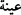

resimlerin aynısını yaparlardı. O kavim, Allah katında yaratılmışların en
şerlileridir.”[343]
Âlimler demişlerdir ki, ilk önceleri o resimleri görerek onlara sevgi beslemek,
onların sâlih hallerini hatırlamak, onların yaptıklarını yapmak ve onların kabirlerinin
yanında Allah’a ibâdet etmek için yapmışlardı. Bir zaman böyle geçti, onlardan sonra
gelenler ise sapıttılar ve şeytanın “atalarınız bu resimlere taparlardı” şeklindeki
vesveselerine uyarak resimlere tapmaya başladılar. İşte bundan dolayı da Peygamber
(s.a.), bu kabil ibâdetleri, şiddetle reddetti ve böyle yapanlara çetin bir azâb olduğunu
söyledi. Böylece işi baştan yasaklamakla harama ve şirke giden yolu kapatmış oldu.
Bu meyânda Peygamberimiz şöyle buyurmuştur: “Nebîlerinin ve sâlihlerinin
kabirlerini mescid edinenlere Allah’ın gadabı şiddetli olacaktır.”[344] “Yâ Rabbi
kabrimi tapılan bir put hâline getirme!”[345] “Yasak olan bir şeye düşme endişesiyle
yasak olmayanı terketmedikçe kişi müttakîlerden olamaz.”[346] “Bir kimsenin
ebeveynine sövmesi, büyük günahlardandır. Ashâb: “Ya Rasûlallah hiç insan
ebeveynine söver mi? dediler. Rasûlullah (s.a.): “Evet insan bir adamın babasına
söver, o da onun babasına söver. Anasına söver, o da onun anasına söver.”[347]
Görüldüğü gibi anne babaya lâf söylettirecek, sövdürecek bir davranış bile sövmeden
sayılmıştır.
Yine Rasûlullah (s.a.) şöyle buyurmuştur: “Helâl de bellidir, haram da. Bunların
ikisinin arasındaki şeyler şüpheli şeylerdir. Kim bu şüphelilerden kaçınırsa ırzını ve
dînini korumuş olur. Kim de onları işlerse korunun etrafında sürüsünü otlatan ve
sürünün koruya girmesinden korkan çoban gibi haramın içine düşer.”[348] Burada da
harama düşme korkusuyla, şüpheli şeyleri yapmak yasaklanmıştır.
Allah Rasûlü’nün bir hadîsi de şöyledir: (
) “Iyne” ile alışveriş yaptığınız
öküzlerin kuyruğuna yapışıp toprağa bağlanarak cihâdı terkettiğiniz zaman Allah
peşine düştüğünüz şeyleri elinizden söküp alır. Tâ ki dininize geri dönünceye
kadar”[349] Buradaki “ıyne” alışverişi, bir kimsenin diğer birisine bir malını, belli bir
fiyat ve va’de ile satıp daha sonra onu sattığı fiyattan az bir bedelle satın almasıdır. Bu
işlemin “ıyne” olarak isimlendirilmesi, yapan kimseye para getirmesi sebebiyledir.
Iyne’de, müşteri o malı, o anda eline geçecek peşin para karşılığında satmak için satın
alır. Cihâda engel olmakta bir “zerîa” olduğu zaman zirâat da men’olunmuştur.
Peygamberimiz (s.a.) içinde saban bulunan bir ev gördüğünde: “Şu âletin girip de
ehlini zelîl etmediği hiçbir ev yoktur”[350] buyurdu. Çünkü zirâat, dünyâyı îmâr etmeye
yarayan, ama cihâda engel olabilecek bir durumdur.
Bilindiği gibi de dünyâ refâhı kâfirler için aslî, mü’minler için ârizî bir durumdur.
Çünkü müslümanlar, dünyâ düzenini âhıret için, bir vesîle bilirler. Oysa kâfirler sadece
dünyâ hayatını bilir, âhıretten gâfil dururlar. Bu yüzden de Peygamberimiz (s.a.) Cennet
nimetlerine kıyasla “Dünyâ mü’minin hapishânesidir” âhırette kendisi için hazırlanmış
olan mahrûmiyete ve büyük hüsrana nisbetle de “dünyâ kâfirin cennetidir”[351]